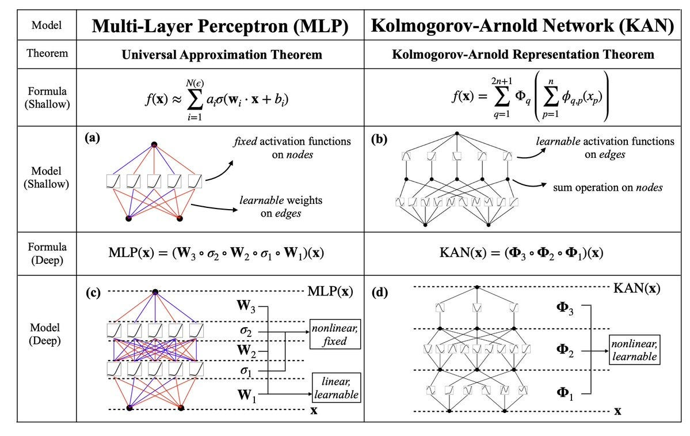

Introduction to Kolmogorov-Arnold Networks
Gasper Spagnolo
MLP vs KAN
Basic building block of KANs: B-splines
What are B-Splines?
B-splines (Basis Splines) are smooth, piecewise-defined polynomial functions commonly used for:
- Curve and surface modeling in CAD tools.
- Approximation of data points in numerical analysis.
- Defining flexible and smooth shapes in computer graphics.
Key Idea: Represent a complex curve as a combination of simpler polynomials with localized control over the shape.
Why B-Splines?
B-Splines are preferred for their:
- Local control: Modifying one control point affects only part of the curve.
- Continuity: Smooth transitions between polynomial segments.
- Stability: Numerically stable even for higher degrees.
- Efficiency: Fewer control points needed compared to other methods.
Example: Fitting a smooth curve through noisy data points (e.g., trajectory planning in robotics).
B-Spline Curve Representation
A B-spline curve \( C(t) \) is defined as:
\[ C(t) = \sum_{i=0}^{n} N_{i,p}(t) \mathbf{P}_i, \]
where:
- \( \mathbf{P}_i \): Control points (define the shape).
- \( N_{i,p}(t) \): B-spline basis functions of degree \( p \).
Example: For \( n = 3 \) and \( p = 2 \), the curve is composed of quadratic basis functions and four control points.
B-Spline Basis Functions
Basis functions are the building blocks of B-splines. They are recursively defined:
Degree 0 (step functions): \[ N_{i,0}(t) = \begin{cases} 1 & \text{if } t_i \leq t < t_{i+1}, \\ 0 & \text{otherwise}. \end{cases} \]
Higher degrees: \[ N_{i,p}(t) = \frac{t - t_i}{t_{i+p} - t_i} N_{i,p-1}(t) + \frac{t_{i+p+1} - t}{t_{i+p+1} - t_{i+1}} N_{i+1,p-1}(t). \]
Example: Degree 0, 1, 2, and 3 B-Spline Basis Functions
Here will be images.The Knot Vector
A knot vector specifies the breakpoints (or divisions) between polynomial segments.
\[ \mathbf{T} = [t_0, t_1, t_2, \dots, t_m], \] where:
- \( t_i \): Knot values (increasing order).
- \( m = n + p + 1 \): Total number of knots.
Types of knot vectors:
- Uniform: Knots are evenly spaced.
- Non-uniform: Knots are not evenly spaced, allowing for flexible shapes.
Example: \([0, 0, 0, 1, 2, 3, 3, 3]\)
Continuity in B-Splines
Continuity determines how smooth the curve is:
- \( C^0 \): Continuous curve (no breaks).
- \( C^1 \): Continuous first derivative (smooth transitions).
- \( C^2 \): Continuous second derivative (very smooth).
The level of continuity depends on the degree \( p \) and the multiplicity of knots.
Example: A cubic B-spline (\( p = 3 \)) can ensure \( C^2 \) continuity with simple knots.
Example: Quadratic B-Spline
Given control points \( \mathbf{P}_0, \mathbf{P}_1, \mathbf{P}_2, \mathbf{P}_3 \):
\[ C(t) = \sum_{i=0}^{3} N_{i,2}(t) \mathbf{P}_i, \]
- Knot vector: \([0, 0, 0, 1, 2, 2, 2]\).
- Basis functions \( N_{i,2}(t) \): Computed recursively.
- Final curve is constructed as a weighted sum of basis functions.

Thank you!
Questions?